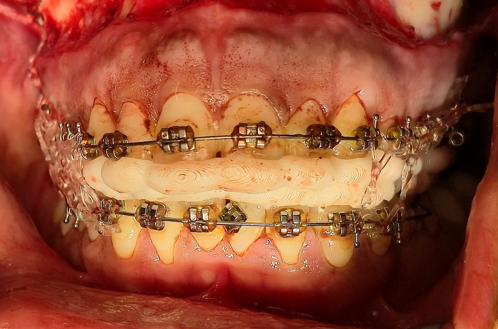
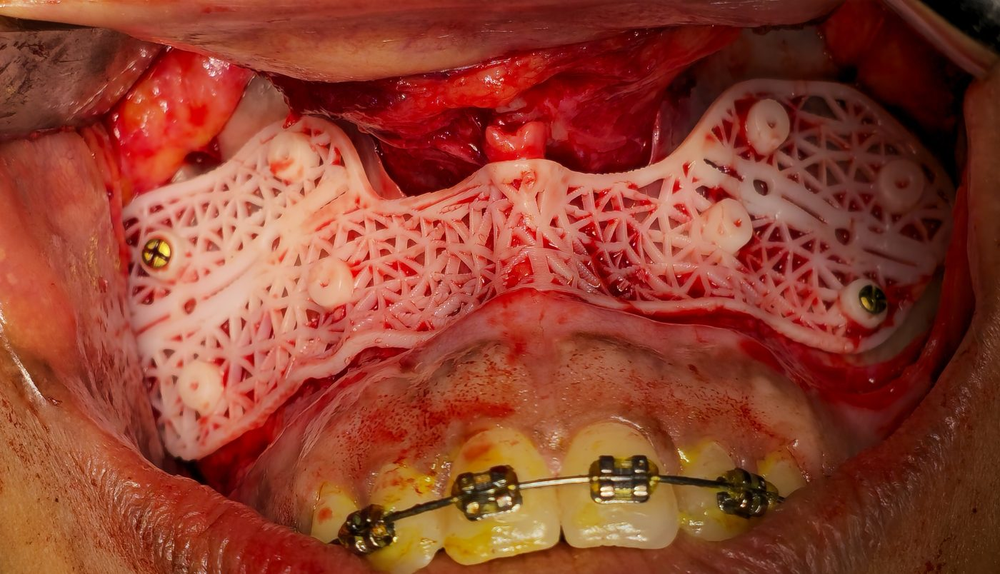
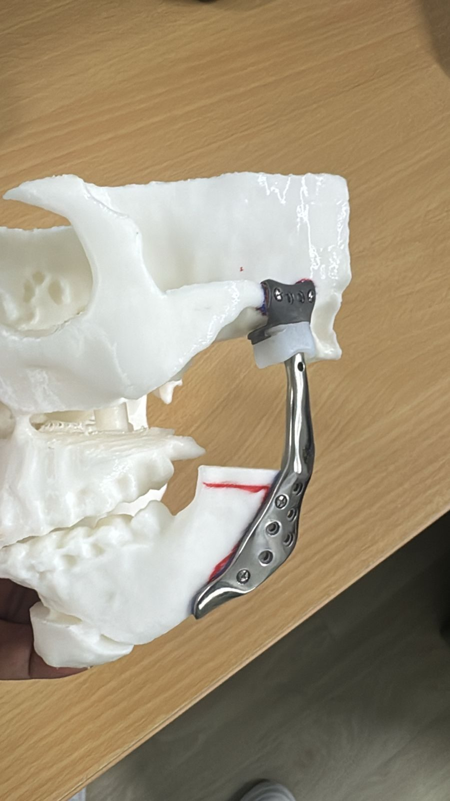
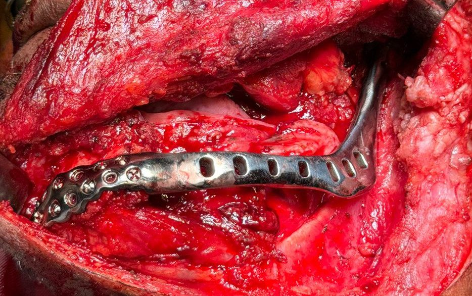
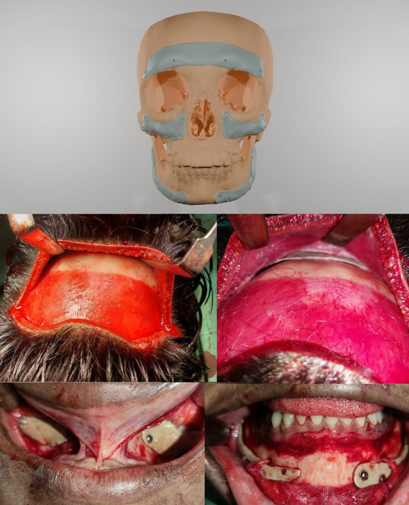
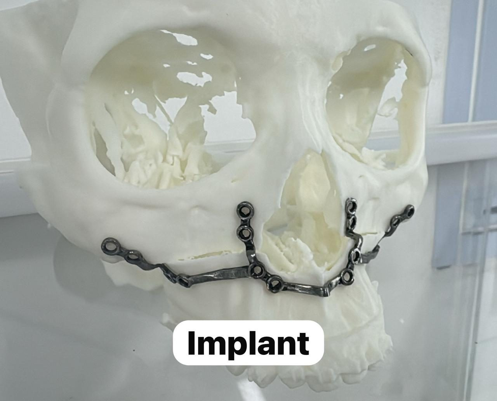
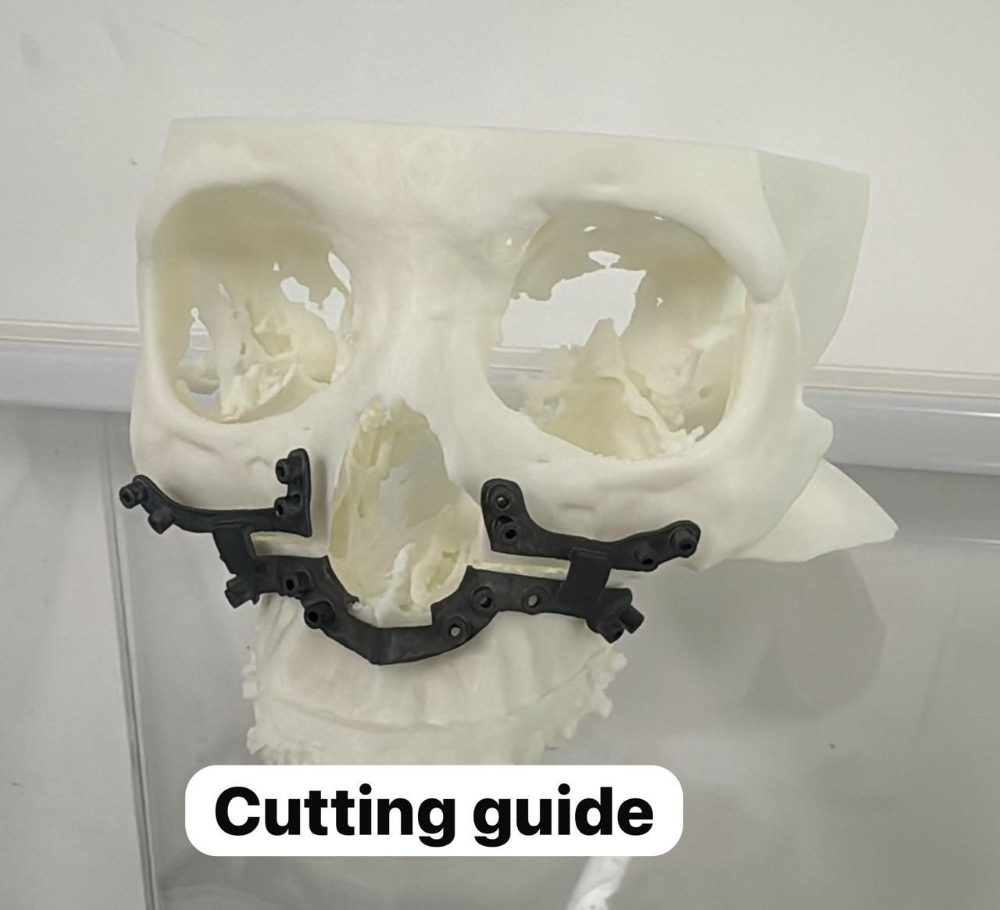
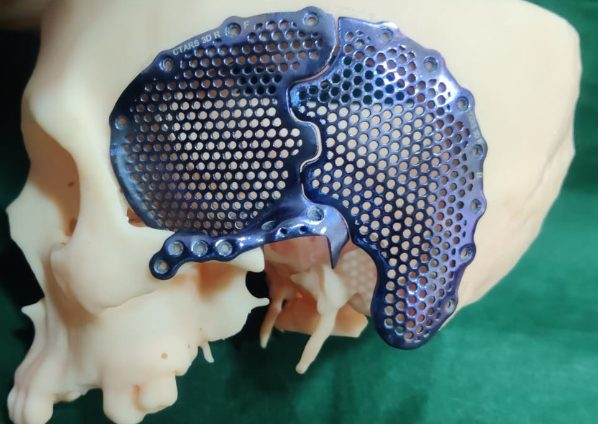
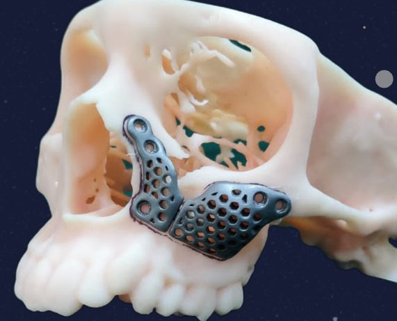
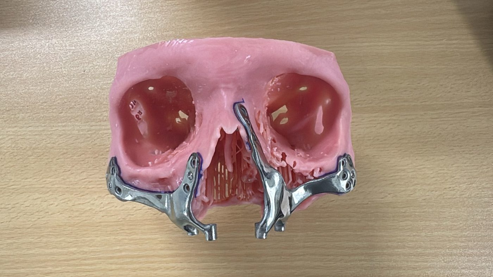

Colombo · Nuwara Eliya — Oral, Maxillofacial & Facial Plastic Surgery
Every face tells a story. Ours is precision.
Dr. Manjula Herath — Consultant Oral & Maxillofacial Surgeon in Sri Lanka, Doktorand (PhD) at Malmö University. Orthognathic jaw surgery, wisdom teeth & dental implants, facial contouring and reconstruction — every case designed in 3D before the first incision.

A digital-first surgeon, at the intersection of theatre and technology.
Operating where clinical surgery, academic research and computational technology meet, Dr. Herath's practice is defined by a digital-first philosophy: every complex procedure is meticulously planned in Virtual Surgical Planning before it is performed — so precision is decided at the design stage, not discovered in theatre.
He performs the full spectrum of Oral & Maxillofacial Surgery — from wisdom teeth and dental implants to orthognathic jaw surgery, facial contouring with patient-specific implants, cleft surgery, major head & neck cancer resections and microvascular reconstruction — and builds the tools and companies behind the work.
"Precision is decided before the first incision."
Surgical services, in Sri Lanka.
From a wisdom tooth to a full facial reconstruction — every case begins as data on your own CT scan, simulated and guided before theatre. Consultations in Colombo & Nuwara Eliya.
Orthognathic (Corrective Jaw) Surgery
Repositioning the jaws for bite problems, facial balance and sleep apnoea — occlusion, profile and airway simulated in 3D before surgery.
digitally guided →Facial Plastic & Contouring
Jawline, chin, cheekbone and brow contouring with patient-specific PEEK implants designed on your own CT — including gender-affirming facial surgery.
designed to fit →Wisdom Teeth & Dental Implants
Routine and surgical wisdom tooth removal, single implants, and full-mouth rehabilitation with zygomatic implants for severe bone loss.
gentle & guided →Head & Neck Cancer Surgery
Major oral, jaw, parotid and salivary-gland cancer surgery — with reconstruction planned as part of the resection, not after it.
planned as one →Facial Trauma & Reconstruction
Facial fracture repair and microvascular free-flap reconstruction after cancer or injury — fibula, radial forearm and beyond.
rebuilt precisely →Cleft, TMJ & Patient-Specific Implants
Cleft lip & palate surgery, total TMJ replacement, and 3D-printed titanium & PEEK implants for jaw, skull and orbital defects.
made for one →Selected cases, planned & delivered.
Real reconstructions from the digital workflow. Intraoperative photographs stay blurred until you choose to view them.


Guided Orthognathic Surgery
Le Fort I osteotomy executed with 3D-printed cutting guides and occlusal wafers — the entire movement planned before theatre.


Total TMJ Replacement
Custom condyle and fossa components designed on the patient's CT and verified on a printed model before surgery.

Facial Contouring with PEEK
Gender-affirming facial contouring — brow, zygoma and jawline implants designed as one digital plan, placed via concealed incisions.


Guided Midface Reconstruction
A matched pair from one plan: the cutting guide defines the osteotomy; the titanium implant fits the defect it creates. Exactly.


Titanium Skull & Orbital Implants
Selective-laser-melted titanium implants — cranioplasty and orbito-zygomatic reconstruction, printed to sub-millimetre fit.

Implants for the Atrophic Maxilla
Custom subperiosteal frameworks for severe bone loss — fixed teeth without bone grafting, anchored on the remaining skeleton.
Intraoperative images are blurred until you choose to view them. Published with patient consent; all images de-identified.
He doesn't just use the tools. He builds them.
SlicerBoneReconstructionPlanner
Co-developed open-source software for planning mandibular reconstruction with fibula free flaps — automated segmentation, virtual osteotomies and printable cutting guides, inside 3D Slicer.
The result: tertiary-level digital reconstruction delivered at a government hospital, at a fraction of commercial cost — now used by surgical teams internationally.
For hospitals, surgeons & partners.
The complete cycle of surgical innovation — treating patients with digital tools, and co-founding the companies that design and manufacture them.
Patient-specific implants, manufactured.
A medical manufacturing company producing patient-specific implants for complex cranio-maxillofacial reconstruction — supplying hospitals and surgeons across the region.
- 3D-printed titanium (SLM) & PEEK implants
- End-to-end virtual surgical planning service
- High-precision surgical guides — resin & metal, in-house
Digitally planned orthodontics.
An international clear aligner brand, built on the same CAD/CAM and additive-manufacturing foundations that drive the surgical work — bringing digital treatment planning to everyday smiles.
- Clear aligner therapy, planned in 3D
- In-house design & manufacturing pipeline
- Clinician partnerships welcome
FaceLab — where it all comes together.
Consultations, digital planning and facial surgery under one roof. Book your appointment directly through the clinic.
Before you decide.
What does an oral & maxillofacial surgeon treat?read —close ×
An oral and maxillofacial (OMF) surgeon is the specialist for surgery of the mouth, jaws, face and neck. In Sri Lanka this covers wisdom tooth removal, dental and zygomatic implants, corrective jaw (orthognathic) surgery, facial contouring, facial trauma, cleft lip and palate, head & neck cancers and complex facial reconstruction.
How do I choose the best facial plastic or maxillofacial surgeon in Sri Lanka?read —close ×
Check for SLMC specialist registration, board certification through the PGIM (University of Colombo), active consultant hospital appointments, and specific experience in the procedure you need. For jaw or facial work, ask whether the surgeon uses 3D virtual surgical planning and patient-specific implants — and ask to see how your own surgery would be planned before you commit.
Do you perform facial plastic and aesthetic procedures?read —close ×
Yes — facial contouring of the jawline, chin, cheekbones and brow using patient-specific PEEK implants designed on your own CT scan, gender-affirming facial surgery, and corrective jaw surgery that improves both function and facial balance. Every change is simulated digitally before surgery.
What is orthognathic (corrective jaw) surgery?read —close ×
Orthognathic surgery repositions the upper jaw, lower jaw or chin to correct bite problems, facial imbalance and obstructive sleep apnoea. Every case here is simulated in 3D beforehand, so the bite, facial profile and airway are planned before theatre.
Do you perform wisdom tooth removal and dental implants?read —close ×
Yes — from routine and surgical wisdom tooth extraction to single dental implants and full-mouth rehabilitation with zygomatic implants for patients with severe bone loss.
What are patient-specific implants (PSIs)?read —close ×
Patient-specific implants are designed on your own CT scan and 3D-printed in titanium or PEEK to fit exactly — used for jaw reconstruction, skull (cranioplasty) and orbital defects, facial contouring and total TMJ replacement. They are designed and manufactured through Protomed CMF.
Where do you consult in Sri Lanka?read —close ×
Consultations are available at FaceLab (facelab.care) and in Colombo and Nuwara Eliya, Sri Lanka, with international academic collaboration through Malmö University, Sweden. Contact by WhatsApp, phone or email to arrange an appointment.
Let's begin your story.
A consultation, a second opinion, or a partnership in surgical technology — the first conversation costs nothing.
Consultations — FaceLab · Colombo · Nuwara Eliya · Sri Lanka
CV available on request · Download CV ↓